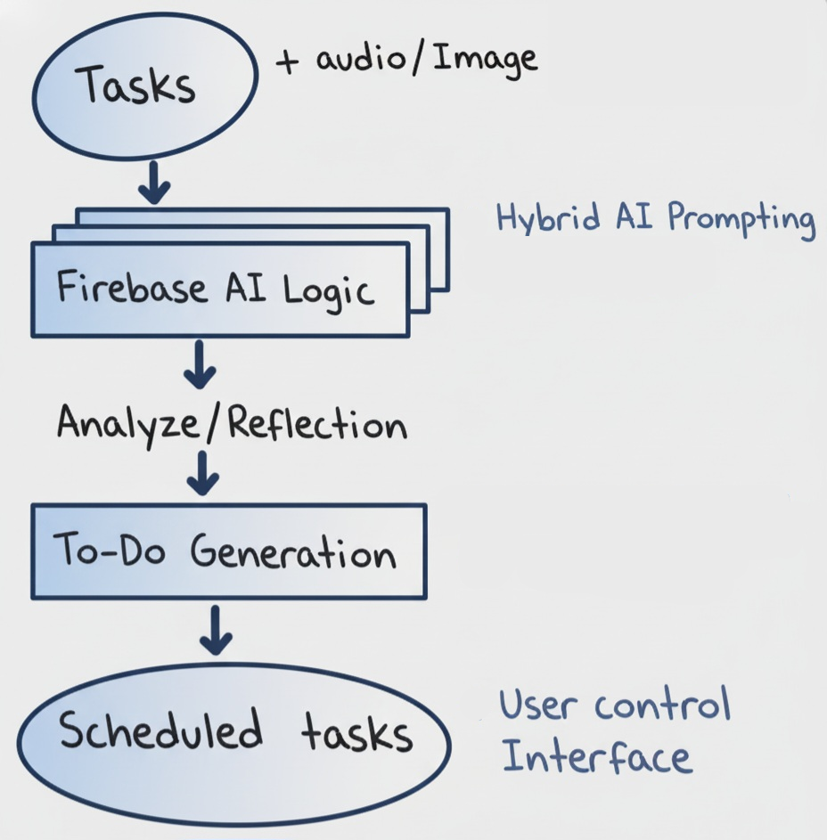

AURA: Time Flowing With You...
Problem
The challenge is the disorganization and cognitive overload I face when dealing with multiple daily commitments. Today, traditional calendar applications require the user to manually enter every detail, which can be laborious and unintuitive.
Solution
A multimodal intelligent assistant for scheduling tasks via audio or post-it note (image) using the Prompt API and Gemini Nano in Firebase AI Logic to ensure a hybrid user experience, processing data locally or in the cloud.
Architecture

#WebApplication
#MultimodalAIApplication
#HybridAIApplication
Add New Task
To test:
Go grocery shopping, October 30st, 2025, at 02:00 p.m
To test:
Download: The boss is reviewing the agenda with you (MP3)
To test:
Schedule Task's
AI Conflict Resolution
When AI identifies date/time conflicts in tasks, it acts autonomously and determines the best time without human intervention. Example: If the task: "Take my cat to get vaccinated at 11 am" is added, but there is a scheduled business meeting, then this appointment is registered at a different time.